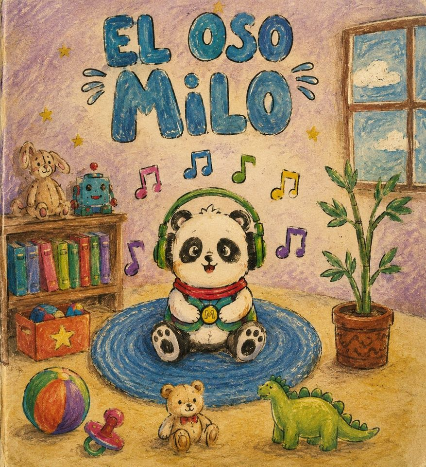
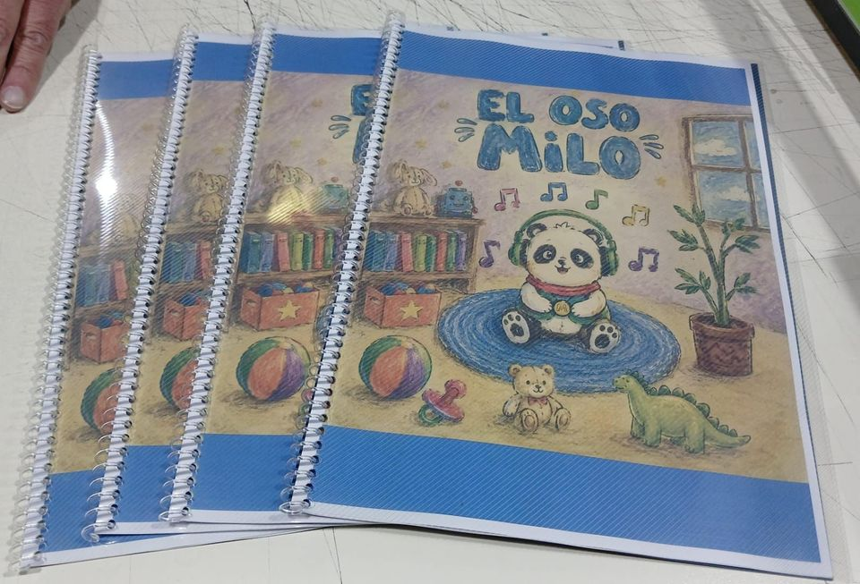

Semáforo de ruido
Prototipo con micro:bit que mide el nivel sonoro y lo traduce a una señal visual que cualquier chico entiende sin explicación.
Escuchar · Aprender
El ruido no se ve, pero se siente. Y para muchas personas dentro del Espectro Autista, un aula ruidosa no es una molestia: es una barrera.
Proyecto STEAM de estudiantes de 3.°, 4.° y 5.° año de la EEM N.° 5 D.E. 15 «Monseñor Enrique Angelelli», Saavedra, CABA. En articulación con el JII N.° 2 D.E. 10 «Merceditas».
01 El problema
Detectamos que el ruido dentro de las escuelas afecta la salud, la concentración y la convivencia de toda la comunidad, y que impacta con mucha más fuerza en personas neurodivergentes y dentro del Espectro Autista (TEA). Nuestra meta: una convivencia acústica equilibrada.
Ruido de fondo máximo sugerido dentro de un aula mientras se dicta clase, para que el mensaje del docente se entienda sin esfuerzo.
Referencia de la OMS para ruido exterior en espacios de recreo escolares.
A partir de este nivel la exposición sostenida puede dañar la audición. Un comedor escolar en hora pico puede rozarlo.
Un semáforo de ruido, un cuento impreso, auriculares diseñados en 3D y trabajo de campo con la comunidad.
35 dB(A) es una referencia para aulas de la OMS. 0–255 es la escala de input.soundLevel() de la micro:bit. Los valores 115 / 150 / 175 son umbrales de nuestro código: sirven para el prototipo y no se presentan como límites médicos universales. Todas las fuentes y documentos están reunidos al final de la página.
Prototipo con micro:bit que mide el nivel sonoro y lo traduce a una señal visual que cualquier chico entiende sin explicación.
Cuento original, escrito e ilustrado por el equipo e impreso en papel, sobre un panda que percibe los sonidos con otra intensidad.
Modelado propio en Tinkercad para impresión 3D: una herramienta de autorregulación accesible y replicable.
Visita al Jardín Merceditas, relevamiento de sonido, actividades con los chicos y registro fotográfico del proceso.
02 Demostración en vivo
Este es el mismo comportamiento que programamos en la placa micro:bit, corriendo en el navegador. Activá el micrófono y pedile a la persona que hable, aplauda o grite.
Sobre la medición: el navegador no puede dar decibeles calibrados
(para eso está el sonómetro que usamos en el jardín). El valor 0–255 es la
misma escala que devuelve input.soundLevel() en la micro:bit y es la que gobierna
el semáforo. Los dB son una estimación de referencia.
Nivel < 115. Entorno adecuado. Se escucha a la maestra y se puede jugar sin esfuerzo.
Nivel ≥ 150. Sobrecarga moderada. Pausa, bajar los estímulos, respirar.
Nivel ≥ 175. Riesgo de crisis. Espacio calmo, silencio y acompañamiento.
03 La tecnología
Lo importante no es la cantidad, sino la decisión pedagógica detrás de cada umbral: el dispositivo no reta a nadie, sólo muestra una carita.
basic.forever(function () {
if (input.soundLevel() < 115) {
basic.showIcon(IconNames.Happy)
} else if (input.soundLevel() >= 150) {
basic.showIcon(IconNames.Asleep)
if (input.soundLevel() >= 175) {
basic.showIcon(IconNames.Sad)
music.play(music.tonePlayable(294, music.beat(BeatFraction.Whole)), music.PlaybackMode.UntilDone)
}
}
})En una sala de jardín nadie lee «178 dB». Pero todos entienden una cara triste. Traducir el dato a una emoción fue la decisión de diseño más importante del proyecto.
Al pasar 175 la placa emite un Re grave y sostenido. Es deliberadamente suave: una alarma estridente sería contraproducente en plena sobrecarga sensorial.
Entre 115 y 149 el programa no ejecuta ninguna rama: la pantalla mantiene el último ícono. Es un comportamiento que registramos al leer el código; en una próxima prueba queremos decidir con docentes si conviene conservarlo o definir una señal específica para ese rango.
04 Cuento pedagógico
Escrito e ilustrado por el equipo e impreso en papel para dejar en el jardín. Milo es un panda al que los sonidos fuertes lo abruman, y sus amigos aprenden que ayudar no siempre es abrazar: a veces es preguntar primero. Pasá las páginas con ← → o deslizando.

Milo en su cuarto, con los auriculares puestos y la música que sí eligió escuchar.

05 Diseño e impresión 3D
Los auriculares que atenúan el ruido son una de las herramientas de autorregulación más usadas por personas con hipersensibilidad auditiva, y también de las más caras. Por eso los modelamos nosotros, pensando en un objeto que cualquier escuela con impresora 3D pueda fabricar.
Un prototipo que sólo funciona en una escuela es una demostración. Un archivo que se descarga y se imprime en cualquier lado es una solución.
El objetivo no es que el chico quede incomunicado, sino bajar el pico de estímulo para que pueda seguir participando de la sala. Autorregularse es poder quedarse.
06 Trabajo de campo
Salimos del aula. En el JII N.° 2 D.E. 10 «Merceditas» recorrimos las salas con sonómetro en mano, mapeamos los niveles de ruido a distintas horas, entrevistamos a los chicos sobre qué sonidos les molestan y trabajamos con ellos en talleres de dibujo. Después instalamos el semáforo.
Valores orientativos de la OMS y rangos típicos, para dimensionar contra qué medimos.
Fuente: Guidelines for Community Noise (OMS) y rangos habituales. Es la vara con la que comparamos: no son nuestras mediciones.
Sonómetro y aplicación en simultáneo, recorriendo salas, pasillos y patio en distintos momentos de la jornada.
Preguntas abiertas a los chicos: qué ruido les molesta en el recreo, cuándo se sienten peor, cómo sería su espacio tranquilo ideal.
Talleres de dibujo y lectura del cuento en la sala. No fueron sujetos de estudio: fueron parte del equipo de diseño.
El semáforo quedó funcionando en el jardín, junto con los ejemplares impresos del cuento.
07 Inclusión a escala real
Fuimos al Club Atlético River Plate a relevar su palco sensorial: un espacio pensado para que una persona dentro del Espectro Autista pueda ver un partido con setenta mil personas gritando alrededor.
Filtra la presión sonora de la tribuna sin desconectar del partido: se sigue viviendo el clima, pero sin el golpe del ruido.
La luz se regula desde adentro, para evitar los estímulos visuales bruscos de reflectores y pantallas.
Pufs, texturas y elementos de estimulación al alcance de la mano, para regularse sin abandonar el estadio.
Si un estadio de fútbol puede adaptarse, una sala de jardín también. Ese fue el argumento que nos llevamos.
08 Campaña · pieza audiovisual
Esta pieza audiovisual forma parte del material de Sound Blue Project. La usamos para abrir una conversación sobre el ruido y las experiencias sensoriales, sin depender de una red social.
Video vertical · 26 segundos · reproducible desde esta página
+ Experiencia · 20 segundos
Explicar la sobrecarga sensorial con palabras nunca alcanza. Esta simulación muestra, por veinte segundos, una versión suavizada de lo que puede significar entrar a un espacio que no está pensado para vos.
Antes de empezar: hay sonido y movimiento en pantalla. No hay destellos rápidos ni luces estroboscópicas. Se sale cuando quieras con el botón o con Esc.
09 Quiénes somos
Somos estudiantes de 3.°, 4.° y 5.° año de la EEM N.° 5 D.E. 15 «Monseñor Enrique Angelelli», en Saavedra. Trabajamos con enfoque STEAM y metodología de Aprendizaje Servicio: no investigamos un problema ajeno, intervenimos en uno propio y dejamos algo funcionando.

Ciencia, tecnología, ingeniería, arte y matemática trabajando juntas sobre un mismo problema concreto del barrio.
Aprendemos contenidos curriculares mientras damos una respuesta real a una necesidad de la comunidad. Las dos cosas a la vez.
Empatizar, definir, idear, prototipar y testear. Por eso primero fuimos a escuchar al jardín y recién después construimos el dispositivo.
10 Fuentes y materiales
Esta página distingue entre material producido por el equipo, documentos de trabajo y referencias externas. Las cifras de referencia no reemplazan las mediciones que realizamos con sonómetro en el jardín.
Resumen General Sound Blue Project, proyecto de concientización, fotos de las visitas, cuento «El Oso Milo», video audiovisual y registro del trabajo en el Jardín Merceditas.
El comportamiento del semáforo se basa en el código original programado por el equipo con micro:bit. El modelo se exportó desde Tinkercad en formato STL.
La OMS señala menos de 35 dB(A) en aulas como referencia para favorecer buenas condiciones de enseñanza y aprendizaje. Es una guía internacional, no una medición propia.
Esto es una versión suavizada. Imaginate que no podés apretar el botón.